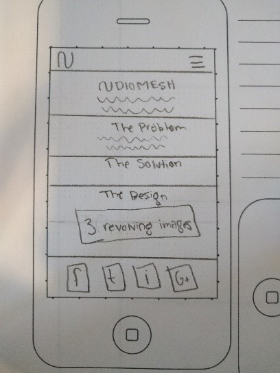
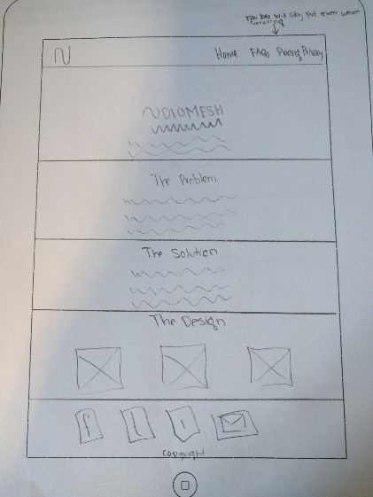
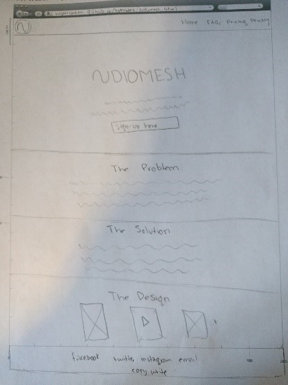

Project Proposal: AudioMesh Promotion
Project Purpose: I’m going to develop a website as a promotion or ad for a new app called AudioMesh. AudioMesh is an app for music song writers, composers, and bands. It is way for bands to write songs together as a group on their mobile devices and to share ideas. For example, you are a guitarist and you recorded a sweet riff. This is an easy way to send your riff to your vocalist in your band for him to listen to, to start writing lyrics for a song. It will advertise most of its key features in an appealing way, as well as give the users a way to find out more. It is a safe way to transfer music ideas due to its cloud based storage. You will not have to worry about losing your musical creations ever again. My website will provide a way for people to stay notified on the apps progress. The purpose for me building this website will help me bring in all the concepts I have learned so far in this class. I will use a CSS external sheet for convenient styling of all the content pages, all of the headers and footers will be modularized, and all of the images will be responsive to the type of device and viewport the user is using.
The Audience
The audience is very targeted. AudioMesh is an app that can only be used by certain kinds of people, those who are into creating music. Real and popular bands will be able to use this as a way to create new songs on the go and to share ideas about future songs, all in a user friendly way that makes combining each other’s tracks a breeze. From the biggest band to the smallest garage band, all could use AudioMesh for what they needed it for. For the music creators of the world, recording and sharing audio files with their bands has always taken two or three different apps to get working. Now with AudioMesh it can all be done in one simple app that is very visually appealing.
Web Pages
- Homepage: The homepage will be where the bulk of AudioMesh is explained. All the pages will have an identical header which includes all of the links to the four other content pages for the site. The homepage will contain information on the concept of the app, as sort of explained in the purpose of this proposal. This will be the page with a video explaining the app. The video will not auto-play because users hate that, but it will be a short introduction of what the app is, including screenshots of its usefulness and convenience. It won’t be the first thing you see on the homepage, but actually it will be the last. It is going to be a relatively short webpage in general, so people that make it to the bottom of the page will be somewhat interested enough to watch the video. This page will also include a way for you to sign up to a newsletter to stay updated about the app. This page will be very simple in design for all layouts, desktop, laptop, and mobile. It will be in a simple ‘material’ design layout. Something I will do to increase the user experience is even make the simple backgrounds and small logos size adjustable to smaller images load on devices that might be using data while laptops would use more.
- FAQs: This page will answer frequently asked questions including questions about how storage works, what phones the app will be compatible with, how audio is shared, ect. It will be in a similar design to the homepage, but will be mostly copy for information. It will have the same header and footer as the homepage does. The information will be laid out in a clean question and answer format to give the most clarity to those questions people might have about the product.
- Pricing: A page showing how the pricing works for users who want more cloud storage space. You can use AudioMesh for free, or you can pay a subscription to have your band recognized as the legit band as well as have no copyright problems. This page will list the pricing on the subscription service. This is where I will pull information from a JSON file. I will put the pricing in the JSON file to be pulled to the site from so it is easy to update the pricing in the future. AudioMesh needs to charge users at a point because it costs money to rent a server to store data on. So for the app to stay in business, it needs to charge a monthly cost to users who use more than the small free amount. I will probably be implementing a test feature of Google Sheets, which you can use to make subscriptions signs ups like I just described. It will be functional fort testing purposes. This page will also have the same header and footer as the rest of the content pages.
- Privacy: A page just answering questions about the privacy of users information, what AudioMesh will do with your music, how AudioMesh will never see your credit card information, what information AudioMesh will have access to, and how to cancel your subscriptions and such. This page will be similar to the FAQs page, in the sense that it is mainly copy. But on this page the layout will be a little different. Instead of questions and answers, it will be headings and paragraphs. The headings will be in bold to make the material easy to read and scan able. Lists will be used if lots of information is being talked about in a similar category. This page will help show off my usability skills and I will see if I can make users be interested in reading boring copy just by making it look appealing with good fonts and graphics.
- Download: This will be a dedicated page to help users how to download the AudioMesh app. It will have step by step instructions, but its primary feature will be a link to the Apple App Store and maybe a link to the Google Play store if it is available on Android soon enough. The main visual on this page will be screenshots of the app itself and a screenshot of what the app looks like in the App Store, so users will know what to look for. I will have different screenshots if the website is being viewed on a iPhone or an iPad.
Wireframe Sketches
  Usability Concepts
- I will use clean minimalistic graphics to decrease image file sizes, to increase load times.
- My text will be clean and easy to read. My site depends on users reading the copy so I need to make it easy to read on any size device.
- I’m going to have huge alt tags to give my site as much seo as possible as well as usability.
- I will try to make a 404 page as well as always adding noscript tags if I use JavaScript.
- The logo will always be in the top left of the page. It will link to the homepage.
- The links will be mobile and tablet optimized and will be consistent on every page of the site. I also want he page that you are on to be highlighted when you are on that page. I find that extremely helpful.
- Major headings will be easily visible. As well as copy.
- There will be a consistent theme for the site. The colors will be similar or matching on each page.
- There will not be any ads.
- Contact information will be very easy to obtain.
- Overall site will be minimalistic in design.
- I will make sure I use a clean thin font. I think users enjoys clean thin font families. Apple products are always advertised with sleek thin graphics. It adds a sense of professionalism that you can’t get with Impact.
- My video will not autoplay, because users don’t like feeling like things are out of control.
- My header is going to be fixed, so it will stay on the screen as you scroll down. I find that a fixed header with the links is imperative to a website that is mainly content orientated.
- My content in general will be easy to scan. It will be in a format that will catch the users eyes and give them just the amount of information they need, no more no less.
- Since my header and footer will be modularized, the user will always be comforted in that they know where to expect the links to be and what links are going to be in the footer. They won’t be caught off guard by any changing in the order of the links in the header for example.
Persona
- Name: James Hetfield
- Age: 53
- Gender: Male
- Occupation: Gutarist for Metallica
- Family Status: Wife named Francesca Hetfield.
James Alan Hetfield is an American musician, singer and songwriter known for being the co-founder, lead vocalist, rhythm guitarist and main songwriter for the American heavy metal band Metallica. The reason why James would want to use AudioMesh is because he is constantly coming up with new music. He and his band are not always in town to practice and share ideas. With AudioMesh, James hopes to be able to share guitar riffs and vocals he makes with his band. This would be able to speed up the communication proccess and in the long run help the output of more songs and helping them earn more money in return.